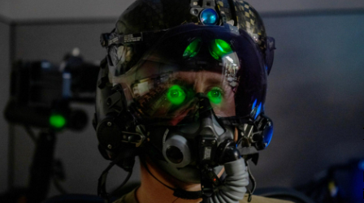

Texas A&M University - College Station
Human Factors and Cognitive Systems Lab
What do we do?
At the Human Factors and Cognitive Systems (HF & CS) Labs, we're all about exploring how people think and interact with machines. Our goal is to understand human cognition in complex systems and come up with smart design solutions that help people stay focused and handle interruptions better. We love experimenting with new interface designs, like using touch instead of just visual displays, to make interactions more intuitive. We're also keen on tackling issues like human error and making better decisions under pressure, and we're passionate about improving how humans work with automation. Our research isn't just theoretical—it has real-world applications in fields like medicine (especially anesthesiology), military operations (command and control, and unmanned vehicle operations), aviation (cockpit automation and air traffic control), and ground transportation. We're committed to making these environments safer, more efficient, and more effective through our work.
Our Work
The Future of Teleoperation in Construction Workplace

This research project aims to advance "smart construction" by addressing cognitive overload in excavator operators. Traditional visual displays can overwhelm operators, leading to reduced performance and increased stress. To mitigate this, the project focuses on developing an electrotactile warning system that alerts operators to the proximity of unseen buried hazards, enhancing spatial awareness and reducing accidents. The project involves designing user-centered systems, developing real-time feedback frameworks, and testing the technology in both virtual and real-world environments. By using advanced sensor technologies and haptic displays, this multidisciplinary effort seeks to improve safety and efficiency in construction.
Team: S M Ashif Hossain
Heart Rate Variability

The concept of mental workload, and its measurement, represents a crucial area of Human Factors research, particularly as task-imposed workload approaches one’s cognitive limits and increases risk of performance decrements. Traditional methods of assessing mental workload often involve subjective surveys such as NASA-TLX or Cooper-Harper scales. These methods are limited, requiring disruption of ongoing tasks to administer the surveys or retrospective assessments that are susceptible to forgetting key experiential aspects. Working around these limitations, researchers have explored psychophysiological measurement to infer workload dynamically. Psychophysiology, focusing on physiological responses to cognitive phenomena, provides near real-time insights into workload without disrupting ongoing tasks. Heart Rate Variability (HRV) is a prominent psychophysiological workload metric, involving analysis of the complex patterns of accelerating and decelerating heartbeats. Less-variant heartbeats (a more consistent cadence) suggest increased workload. This study explores prominent time-domain heart rate variability metrics, calculated over varied windows of time. Wider time windows are sensitive to longer-term sources of workload, such as the effects of tasks assigned to a particular operator role, while narrower windows capture event-based workload changes. In the current study, participants perform tasks in a multitasking environment designed in NASA’s Multi-Attribute Task Battery-II (MATB-II) environment, with low, medium, and high levels of imposed workload. Results will provide insight into the selection of particular HRV metrics for use in ongoing military domain research which is concerned with measuring both task-based and event-based workload dynamics. These findings will be insightful for the real-time measurement of experienced cognitive workload in human factors research.
Team: Srijani Mukherjee, Nikita Rghatate, Naveen Gada, John Burke, Liliana Hildebrand.
Quantifying Productivity Gains with Collaborative Robots

This research project delves into the potential efficiency and productivity gains achieved by integrating collaborative robots (cobots) in agile manufacturing settings, particularly focusing on the reduction of downtime during frequent product changeovers. By systematically comparing the output of manual assembly tasks to those assisted by a FANUC CRX10iA cobot equipped with gripper and screwdriving end effectors, the study highlights significant boosts in operational efficiency. The cobot’s role in tasks such as gripping, repositioning, and precision screw driving not only streamlines processes but also minimizes downtime, crucial for maintaining high levels of productivity. The research provides a detailed analysis of productivity data, showcasing the enhancements in performance metrics when cobots are involved. This project sets a benchmark for cobot adoption in small and medium-sized manufacturing systems, emphasizing the core objective of improving operational efficiency and productivity through advanced human-robot collaboration. The findings aim to guide future cobot programming and deployment strategies, fostering an environment where human and robot collaboration enhances overall productivity in the manufacturing sector.
Team: Nandhini Manikandan,Gwilym Couch, Bhargav Lagudu, Sai Manohar Gandreddi.
Sophie

The project investigates pilot fatigue using ElectroOculoGraphy (EOG) during a prolonged aeronautical scenario simulation. Fatigue levels were measured using three EOG metrics: Blink Rate (BR), Blink Duration (BD), and positive Amplitude Velocity Ratio (pAVR). Participants remained awake for at least 18 hours before engaging in fatigue-inducing visual tasks for up to 4 hours. EOG metrics were analyzed to identify correlations with fatigue development over time, revealing that BD was the most sensitive metric, showing a consistent upward trend, whereas BR and pAVR were less reliable. Cluster analyses incorporating features from each metric enabled the identification of distinct fatigue categories, enhancing fatigue assessment accuracy. Future research will test a fatigue categorization model derived from this cluster analysis to predict the onset and progression of operator fatigue.
Team: Gwilym Couch, Gil Trevino Jakob Geib, Nandhini Manikandan.
Rubber Hand Illusion in VR

The "Rubberhand" remote physical examination project, involves using virtual reality (VR) to enable remote soft tissue examination as a collaborative practice. The project focuses on two main directions: designing a small game to measure system performance and recreating the Rubber Hand Illusion (RHI) in VR. The experimental setup includes synchronous stroking and visuoproprioceptive integration, leveraging a 3D model of space represented in VR, which takes approximately two weeks to develop. Performance measurement involves pilot testing in the Human Factors and Cognitive Science lab, using Empatica E4 for physiological data collection. The goal is to enhance the understanding of the RHI effect and improve remote physical examination techniques through advanced VR simulations.
Team: Morgan Sinko, Gwilym Couch, Nandhini Manikandan, Gil Trevino, Jakob Geib, Pranav Venkataraman, Ty Williams.
Cybersickness and Locomotion

This project focuses on understanding and mitigating cybersickness induced by virtual reality (VR) experiences. Starting from an investigation into the root causes and preventative measures of cybersickness, the team discovered that most comfort settings are designed to convince users they are not moving. The project's dissertation emphasizes the collection of sensory channel data to explore the sense of motion (vection) and aims to minimize cybersickness by enhancing sensory integration. Current studies involve running data collection, experimenting with new hardware, and pilot testing to improve the VR environment's visual excitement. An upcoming study will utilize an omnidirectional treadmill to examine the reduction of cybersickness through natural walking, leveraging the proprioceptive and vestibular systems to provide a more immersive and comfortable VR experience..
Team: Morgan Sinko, Elliot Taylor, Caden George.